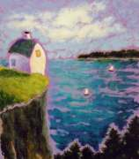
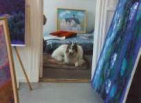

"Art provides us with clues about how to live our lives more fully." ~ Michael Kimmelman The Accidental Masterpiece "Every great advance in science has issued from an audacity of the imagination." ~ John Dewey "Imagination abandoned by Reason produces impossible monsters; united with her, she is the mother of the arts and the origin of their marvels." ~ Francisco Goya "At the height of laughter, the universe is flung into a kaleidoscope of new possibilities." ~ Jean Houston |
About the Artist
Sharon Larkin is a Maine artist known for her paintings of
houses.
 She has had a lifelong fascination with the buildings that we humans make for ourselves. Born in Portland, Maine, she spent the early part of her childhood on a farm in Saco, Maine. Later she had the opportunity to live in one-room cabins, three-decker tenements, decaying brick warehouses, and medieval castles with thick stone walls. Inspiring as these buildings were, none of them diminished her loyalty to her first love: the dilapidated Maine farmhouse.. . . .She studied architecture, and with the help of her two sons built a house on old farm land in southern Maine. When it burned down in 1984, she spent a year traveling throughout the Great Basin area of the western U. S. The shifting colors and forms revealed by the intense desert light nourished the yearning to paint, which had long been ignored in her absorption with architectural design. She first began to paint while living in the Nevada desert in a tent. . . . .Since returning to Maine she has been painting and exhibiting The Secret Lives of Houses--works depicting the a  ncient, primordial landscape of home that we all carry within us. She loves the increased freedom of design that comes with working in two dimensions instead of three, finding it much easier to make the buildings stand up.. . .
.Currently
working on a series of houses in hills, the artist now lives in her own
dilapidated Maine farmhouse with a golden brown dog, a black and white
cat, and a lawn that needs mowing.
Read Artist's Statement.. Home | About the Artist | About the Paintings | Catalogue |